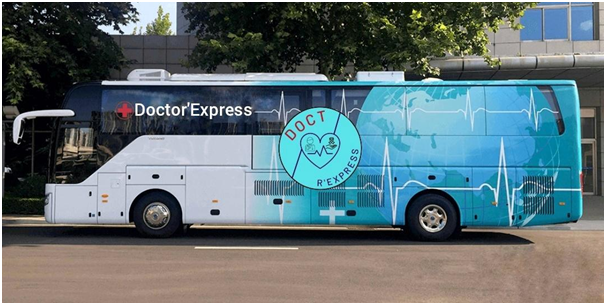

Bienvenue sur le site de Doctor'Express
Parce qu’aujourd’hui obtenir un rendez-vous avec un généraliste c’est très compliqué. Choisissez le Bus Médical !
Concept de Doctor'Express
Le bus médical arrive à 9h et stationne jusqu’à 20h sur la place des différentes mairies. Les consultations sont sans RDV et gratuites sur présentation de la carte vitale.
Chaque jour, le bus se déplace dans des villes différentes.
Nous travaillons en collaboration avec les hôpitaux de Purpan et de Rangueil et des internes en 8ème année de médecine ainsi que les collectivités locales de l’Ariège
Si vous souhaitez nous demander des informations le formulaire est disponible
Vous avez besoin de savoir où se trouve le bus médical ? Allez voir la carte.
